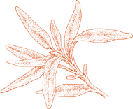

FИЛИ ИТАЛЬЯНСКИЕ СЕМЬИ, это изысканно простое блюдо — классический способ приготовления жаркого. Это прекрасная иллюстрация основных метод обжаривания на сковороде, используемый домашними поварами в Италии и проводимый полностью на горелке. Его секрет заключается в медленном и внимательном приготовлении в частично закрытой кастрюле, тщательно следя за количеством жидкости, чтобы ее было ровно столько, чтобы мясо не прилипло к сковороде, но не настолько, чтобы оно разбавило его вкус. Никакой другой метод не дает более пикантного и сочного жаркого, и он так же эффективен для птицы и баранины, как для телятины.
На 6 порций
3 средних зубчика чеснока
2 фунта жаркого из телятины без костей (см. примечание ниже)
Веточка розмарина ИЛИ 1 чайная ложка сушеных листьев розмарина
2 столовые ложки растительного масла
2 столовые ложки сливочного масла
Соль
Черный перец, свежемолотый с мельницы
⅔ стакана белого сухого вина
Примечание  Сочным, ароматным и недорогим куском для этого жаркого будет телячья лопатка без костей.
Сочным, ароматным и недорогим куском для этого жаркого будет телячья лопатка без костей.
1. Слегка разомните чеснок ручкой ножа, ударяя по нему достаточно сильно, чтобы расколоть кожицу, которую вы снимите и выбросите.
2. Если мясо нужно свернуть, положите на него чеснок, розмарин и несколько молотых перцев, пока оно плоское, затем сверните его и надежно завяжите. Если это цельный кусок из круглого, проткните его в нескольких точках острым ножом с узким лезвием, вставьте чеснок и распределите тут и там веточку розмарина, разделенную на несколько частей, или сушеные листья.
3. Выберите чугунную кастрюлю с толстым дном или эмалированную, возможно, овальной формы, достаточно большую, чтобы вместить мясо. Заливаем растительное и сливочное масло, включаем. огонь до среднего, а когда масляная пена начнет спадать, положите мясо и обжарьте его со всех сторон. Посыпьте солью и перцем.
4. Добавьте вино и деревянной ложкой удалите остатки подрумянивания, прилипшие ко дну и стенкам кастрюли. Отрегулируйте огонь так, чтобы вино едва кипело, слегка приоткройте крышку и готовьте 1,5–2 часа, пока мясо не станет очень мягким, если его протыкать вилкой. Время от времени переворачивайте жаркое во время приготовления и, если в кастрюле нет жидкости, добавляйте 2–3 столовые ложки воды так часто, как это необходимо.
5. Когда все будет готово, переложите жаркое на разделочную доску. Если в кастрюле не осталось сока, налейте ¼ стакана воды, увеличьте огонь до максимума и выкипятите воду, одновременно отделяя прилипшие ко дну и бокам остатки готовки. С другой стороны, если в кастрюле оказалось слишком много жидкости (на порцию должно приходиться примерно ложка или немного меньше сока), убавьте ее на сильном огне. Выключите огонь.
6. Нарежьте жаркое ломтиками толщиной около ¼ дюйма. Разложите их на теплом блюде, полейте кулинарным соком и сразу же подавайте.
Предварительное примечание Приготовление можно завершить за несколько часов до этого момента. Аккуратно разогрейте в закрытой кастрюле с 1 или 2 столовыми ложками воды, если необходимо.

TГРУДЬ — один из самых сочных и вкусных, а также один из самых дешевых кусков телятины. Ребристые кости, к которым оно прикреплено, необходимо удалить, чтобы мясо можно было свернуть в рулет, но если мясник сделает это за вас, не оставляйте кости, потому что они являются отличным дополнением к домашнему мясному бульону.
Если вы хотите попробовать обвалить мясо самостоятельно (а это довольно просто), действуйте следующим образом: положите грудку на рабочий стол ребрышками вниз и просуньте лезвие острого ножа между мясом и костями, работая по всей длине. мясо рассыпчатым, одним плоским куском. Удалите кусочки хрящей и свободные участки кожи, но не отделяйте тот слой кожи, который прилегает к грудке и покрывает ее.
На 4-6 порций
Телячья грудка одним куском, от 4½ до 5 фунтов вместе с костями, что дает примерно 1¾ фунта мяса при разделке костей либо мясником, либо, как описано выше.
Соль
Черный перец, свежемолотый с мельницы
¼ фунта панчетта, нарезанный очень, очень тонко
2 или 3 зубчика чеснока, очищенных
Веточка-две розмарина ИЛИ 1 чайная ложка сушеных листьев розмарина
Ферменная струна
1 столовая ложка растительного масла
2 столовые ложки сливочного масла
½ стакана белого сухого вина
1. Уложите мясо без кости плоско кожей вниз, посыпьте солью и перцем, разложите нарезанные кусочки. панчетта поверх него добавьте зубчики чеснока, расположенные на большом расстоянии друг от друга, и посыпьте розмарином. Плотно сверните мясо рулетом из желе и крепко завяжите его веревкой.
2. Выберите чугунную кастрюлю с толстым дном или эмалированную, возможно, овальной формы, достаточно большую для мяса. Добавьте растительное и сливочное масло, включите средний огонь, а когда пена масла начнет спадать, положите мясо и обжарьте его со всех сторон. Посыпьте солью и добавьте вино.
3. Дайте вину закипеть, переверните в нем мясо и через несколько секунд убавьте огонь, чтобы вино пузырилось при очень медленном прерывистом кипении. Слегка приоткройте крышку и готовьте 1,5–2 часа, пока мясо не станет очень мягким, если его протыкать вилкой. Во время приготовления время от времени переворачивайте грудку и, если в кастрюле нет жидкости, добавляйте 2–3 столовые ложки воды так часто, как это необходимо.
4. Переложите мясо на разделочную доску. Добавьте 2 столовые ложки воды к соку в кастрюле, увеличьте огонь до сильного и выкипятите воду, соскребая деревянной ложкой остатки готовки со дна и боков. Выключите огонь.
5. Нарежьте грудку ломтиками толщиной чуть меньше ½ дюйма. Если вы оставите связки натянутыми, вам будет легче разрезать грудку на компактные ломтики, но после нарезки не забудьте отделить все кусочки веревки. Найдите и выбросьте 2 зубчика чеснока, разложите ломтики на теплом сервировочном блюде, полейте их соком кастрюли и сразу подавайте.
Предварительное примечание Следуйте рекомендациям по Жареная телятина с чесноком, розмарином и белым вином.
AХОТЯ ЭТО БЫЛО долгое время было одним из моих любимых мясных блюд, оно было настолько простым и понятным, что я воспринимал его как нечто само собой разумеющееся, и оно ускользнуло от моего внимания как рецепт, который нужно было записать. Поздний Он был со мной у Джеймса Бирда в болонском ресторане «Диана», когда он приехал в середине 1970-х годов, чтобы наблюдать за курсом, который я тогда преподавал. Именно он был настолько увлечен этим, что убедил меня записать рецепт.
Вся грудка с костями запекается на плите классическим итальянским способом, без жидкости, но с небольшим количеством кулинарного жира, небольшим количеством вина и собственным соком. Его гораздо проще приготовить, чем любую из причудливых фаршированных вещей, которые иногда делают из телячьей грудки, и из него получается впечатляющее жаркое насыщенного коричневого цвета и удивительно нежное и пикантное мясо.
На 4 порции
3 столовые ложки оливкового масла первого холодного отжима 3 целых зубчика чеснока, очищенных
3½ фунта телячьей грудки с ребристыми костями внутри
2 веточки свежего розмарина ИЛИ 1 чайная ложка сушеных листьев
Соль
Черный перец, свежемолотый с мельницы
⅔ стакана белого сухого вина
1. Выберите сотейник, в который впоследствии можно будет положить мясо, лежащее ровно. Добавьте масло и чеснок и включите средний огонь.

2. Когда масло станет достаточно горячим, положите его на грудку кожей вниз. Масло должно шипеть, когда мясо войдет в него. Добавьте розмарин. Обжарьте мясо с одной стороны, затем с другой. Добавьте соль и перец, готовьте еще минуту-две, перевернув грудку 2-3 раза, затем добавьте вино. Когда вино начнет бурно пузыриться в течение 20–30 секунд, убавьте огонь до минимума и накройте кастрюлю, слегка приоткрыв крышку.
3. Время от времени переворачивайте мясо, пока оно готовится. Если вы обнаружите, что он прилип, ослабьте его с помощью 2 или 3 столовых ложек воды и проверьте огонь, чтобы убедиться, что вы готовите на очень медленном темпе. Телятина готова, когда ее протыкают вилкой, она становится очень нежной и приобретает красивый коричневый цвет по всей поверхности. Ожидайте, что это займет от 2 до 2,5 часов.
4. Переложите грудку на разделочную доску ребрышками к себе. Острым ножом для обвалки костей отделите их, вытащите и выбросьте. Нарезаем мясо тонкими ломтиками, разрезая его по диагонали. Нарезанное мясо выложите на теплое сервировочное блюдо.

5. Наклоните сковороду и слейте с нее немного жира. Включите средний огонь, добавьте 2–3 столовые ложки воды и доведите до кипения, соскребая деревянной ложкой остатки кулинарии со дна и боков. Полейте телятину соком из сковороды и сразу подавайте к столу.
Оссобуко, автобус oss на миланском диалекте означает «кость с дыркой». Речь идет о кости задней голяшки теленка, а кольцо мяса, окружающее ее, самое сладкое и нежное на всем животном. Чтобы быть уверенным, что на тарелке он будет таким тающим и нежным, как задумано Природой, руководствуйтесь следующими советами:
• Настаивайте на том, чтобы голяшка была получена только из более мясистой задней ноги. Если вы покупаете его в супермаркете и сомневаетесь, найдите одного из мясников, который обычно находится под рукой в течение дня, и спросите его.
• Иметь оссобуко нарезать не толще 1,5 дюйма. Это размер, при котором он готовится лучше всего. Толстый оссобукоКак бы эффектно оно ни выглядело на тарелке, оно редко готовится достаточно долго и медленно и обычно оказывается жевательным и тягучим.
• Убедитесь, что мясник не снимает кожу с голяшек. Это не только помогает удерживать оссобуко вместе во время приготовления, но его кремовая консистенция вносит восхитительный вклад в окончательный вкус блюда.
• Будьте готовы дать оссобуко времени достаточно, чтобы приготовить. Медленное и терпеливое приготовление имеет важное значение, если вы хотите сохранить естественную сочность рульки.
Примечание Когда вы покупаете целую голяшку, попросите мясника отпилить вам оба конца. Вы не хотите, чтобы они были в оссобуко потому что мяса в них немного, но они являются прекрасным дополнением к разнообразным компонентам домашнего мясного бульона.
На 6-8 порций
1 чашка лука, мелко нарезанного
⅔ стакана моркови, мелко нарезанной
⅔ стакана сельдерея, мелко нарезанного
4 столовые ложки (½ палочки) сливочного масла
1 чайная ложка чеснока, мелко нарезанного
2 полоски цедры лимона без белой сердцевины под ней
⅓ стакана растительного масла
8 ломтиков задней части телячьей голяшки толщиной 1,5 дюйма, каждый плотно завязать посередине.
Мука, выложенная на тарелку
1 стакан сухого белого вина
1 чашка приготовленного базового домашнего мясного бульона как указано, ИЛИ ½ стакана консервированного говяжьего бульона с
½ стакана воды
1½ стакана консервированных импортных итальянских помидоров сливы, крупно нарезанных, с соком
½ чайной ложки свежего тимьяна ИЛИ ¼ чайной ложки сушеных
2 лавровых листа
2 или 3 веточки петрушки
Черный перец, свежемолотый с мельницы
Соль
1. Разогрейте духовку до 350°.
2. Выбирайте кастрюлю с толстым дном или из эмалированного чугуна, в которой впоследствии можно будет разместить все телячьи голяшки в один слой. (Если у вас нет достаточно большой кастрюли, используйте две меньшие, разделив ингредиенты на две равные половины, но добавив по 1 дополнительной столовой ложке сливочного масла в каждую кастрюлю.) Положите лук, морковь, сельдерей и сливочное масло и включите средний огонь. Готовьте примерно 6–7 минут, добавьте измельченный чеснок и цедру лимона, готовьте еще 2–3 минуты, пока овощи не станут мягкими и не завянут, затем снимите с огня.
3. Налейте растительное масло в сковороду и включите средний огонь. Обвалять телячьи голяшки в муке, обмазать их со всех сторон и стряхнуть лишнюю муку.
Когда масло станет достаточно горячим (оно должно шипеть, когда телятина войдет в него), вставьте в него голяшки и обжарьте их полностью со всех сторон. Выньте их из сковороды шумовкой или лопаткой и поставьте рядом с нарезанными овощами в кастрюле.
4. Наклоните сковороду и слейте с нее все масло, кроме небольшого количества. Добавьте вино, уварите его, варя на среднем огне, соскребая деревянной ложкой остатки подрумянивания, прилипшие ко дну и бокам. Вылейте сок сковороды на телятину в кастрюле.
5. Налейте бульон в сковороду, доведите его до кипения и добавьте в кастрюлю. Также добавьте нарезанные помидоры с соком, тимьян, лавровый лист, петрушку, перец и соль. Бульон должен был дойти на две трети до верха рульки. Если нет, добавьте еще.
6. Доведите жидкости в кастрюле до кипения, плотно накройте кастрюлю и поставьте ее в нижнюю треть разогретой духовки. Готовьте около 2 часов или до тех пор, пока мясо не станет очень мягким, если его протыкать вилкой, и не образуется густой сливочный соус. Переворачивайте и поливайте рульки каждые 20 минут. Если, пока оссобуко Во время приготовления жидкости в кастрюле становится недостаточно, при необходимости добавляйте по 2 столовые ложки воды за раз.
7. Когда оссобуко Готово, переложите его на теплое блюдо, осторожно снимите связки, не позволяя голяшкам развалиться, полейте их соусом из кастрюли и сразу подавайте. Если сок в кастрюле слишком жидкий и водянистый, поставьте кастрюлю на плиту с сильным огнем, выпарите лишнюю жидкость, а затем вылейте выделившийся сок в кастрюлю. оссобуко на блюде.
Примечание Не посыпайте мукой телятину или что-либо еще, что нужно подрумянить, потому что мука станет сырой и поверхность станет хрустящей.
Если вы хотите наблюдать оссобуко строго по традиции, вы должны добавить ароматическую смесь, называемую гремолада к голяшкам, когда они почти готовы. Я никогда делаю сам, но некоторым это нравится, и если хотите попробовать, вот из чего оно состоит:
1 чайная ложка тертой цедры лимона, стараясь избегать белой сердцевины
¼ чайной ложки чеснока, нарезанного очень-очень мелко
1 столовая ложка измельченной петрушки
Равномерно смешайте ингредиенты и посыпьте этой смесью рульки во время их приготовления, но когда они будут готовы, чтобы гремолада готовится с телятиной не дольше 2 минут.
Предварительное примечание Оссобуко можно полностью приготовить за день или два. Его следует осторожно разогреть на плите, при необходимости добавив 1–2 столовые ложки воды. Если вы используете гремолада, добавляйте его только при разогреве мяса.
TОН СЛЕГКОРУКИЙ и нежно ароматный оссобуко Этот рецепт сильно отличается от крепкой миланской версии. Помидоры, овощи и травы традиционного приготовления отсутствуют, и его готовят в медленном итальянском стиле, запекая на сковороде, полностью на плите.
На 6-8 порций
¼ стакана оливкового масла первого отжима
2 столовые ложки сливочного масла
8 ломтиков задней части телячьей голяшки толщиной 1,5 дюйма, каждый плотно завязать посередине.
Мука, выложенная на тарелку
Соль
Черный перец, свежемолотый с мельницы
1 стакан сухого белого вина
2 столовые ложки цедры лимона без белой сердцевины, очень мелко нарезанной
5 столовых ложек измельченной петрушки
1. Выберите большой сотейник, в котором впоследствии можно будет разместить все рульки плотно, не накладываясь друг на друга. (Если у вас нет такой широкой сковороды, используйте две, разделив сливочное и растительное масло пополам, а затем добавляя по 1 столовой ложке каждого на каждую сковороду.) Положите масло и сливочное масло и включите огонь, чтобы средний высокий. Когда масляная пена начнет спадать, обваляйте рульки в муке, покрывая их с обеих сторон, стряхните лишнюю муку и переложите на сковороду.
2. Глубоко подрумяньте мясо с обеих сторон, затем посыпьте солью и несколькими щепотками перца, переверните рульки и добавьте вино. Отрегулируйте огонь так, чтобы оно варилось на очень медленном огне, и накройте кастрюлю, слегка приоткрыв крышку.
3. Примерно через 10 минут загляните в кастрюлю и проверьте, не стало ли жидкости недостаточно для продолжения приготовления. Если это возможно, добавьте ⅓ стакана теплой воды. Время от времени проверяйте кастрюлю и при необходимости добавляйте еще воды. Общее время приготовления составит 2–2,5 часа: голяшки готовы, когда мясо легко отделяется от кости и становится достаточно мягким, чтобы его можно было разрезать вилкой. Когда все будет готово, переложите телятину на теплую тарелку с помощью шумовки или лопаточки.
4. Добавьте в сковороду нарезанную цедру лимона и петрушку, увеличьте огонь до среднего и перемешивайте деревянной ложкой около 1 минуты, удаляя остатки кулинарии со дна и боков и уменьшая количество жидкого сока в кастрюле. Верните рульки в кастрюлю, ненадолго обмакните их в сок, затем переложите все содержимое кастрюли на теплое блюдо и сразу подавайте.
Предварительное примечание Легкий, ароматный вкус этого особенного оссобуко плохо переносит охлаждение, поэтому не рекомендуется готовить его заранее. Его, безусловно, можно приготовить рано в день подачи; разогрейте его в кастрюле, в которой оно готовилось, под крышкой на слабом огне в течение 10 или 15 минут, пока мясо не прогреется полностью. Если сока в кастрюле станет недостаточно, добавьте 1–2 столовые ложки воды.
Стинко по-итальянски то, что называется на диалекте Триеста Шинкотелячья голяшка медленно тушеная целиком, а затем подается нарезанной с кости очень тонкими ломтиками. Он происходит из той же части задней ноги, которую Милан использует для оссобуко, чьи сочные качества он разделяет, но в отличие от оссобуко, это не сделано с помидорами. Анчоусы, входящие в состав вкусовой основы, растворяются и становятся незаметными, но они вносят тонкий вклад в глубину вкуса, которая является отличительной чертой этого блюда. Стинко, или Шинко, вкуснее всего, если его полностью приготовить на плите классическим итальянским методом запекания на сковороде.
На 8 порций
2 целые телячьи голяшки (см. примечание ниже)
2 зубчика чеснока
3 столовые ложки растительного масла
3 столовые ложки сливочного масла
½ стакана нарезанного лука
Соль
Черный перец, свежемолотый с мельницы
⅓ стакана сухого белого вина
6 плоских филе анчоусов (желательно приготовленных дома как описано)
Примечание Голяшки должны исходить из задней ноги. Отпилите сустав на широком конце голяшки, чтобы кость можно было поставить на стол стоя, окруженную вырезанными ломтиками. Также попросите мясника снять достаточно кости с узкого конца, чтобы обнажиться костный мозг, который за столом можно выковырять узким инструментом, и это очень вкусно.
1. Поставьте голяшки на широкие концы и острым ножом освободите кожу, мякоть и сухожилия на узком конце. Это приведет к тому, что мясо во время приготовления оторвется от кости на этом конце и соберется в пухлую массу у основания рульки, придавая стерва по форме напоминающий гигантский леденец. Если вам сложно это сделать, когда мясо сырое, попробуйте сделать это через 10 минут после приготовления, когда это станет намного проще.
2. Слегка разомните чеснок ручкой ножа, достаточно сильно, чтобы разделить кожицу, которую вы ослабите и выбросите.
3. Вам понадобится кастрюля с толстым дном, желательно овальной формы, в которой впоследствии можно будет плотно разместить обе черенки. Добавьте масло и сливочное масло, включите средний огонь и, когда пена масла начнет спадать, вставьте обе рульки.
4. Переверните голяшки, чтобы телятина полностью подрумянилась, затем убавьте огонь до среднего и добавьте нарезанный лук, помещая его между мясом на дно кастрюли.
5. Готовьте лук, помешивая, пока он не станет золотистого цвета. Добавьте чеснок, соль, перец и вино. Дайте вину покипеть около 1 минуты, перевернув ножки один или два раза, затем добавьте филе анчоусов, убавьте огонь до очень слабого и накройте кастрюлю, слегка приоткрыв крышку. Готовьте около 2 часов, пока мясо не станет очень мягким, если его протыкать вилкой. Время от времени переворачивайте телятину. Когда жидкости в кастрюле станет настолько мало, что мясо начнет прилипать ко дну, добавьте ⅓ стакана воды и переверните рульки.
6. Когда телятина будет готова, положите рульку на разделочную доску и нарежьте мясо тонкими ломтиками, разрезая под углом, по диагонали к кости. Поставьте вырезанные кости более широким концом на теплое сервировочное блюдо и разложите у их основания ломтики мяса.
7. Налейте ⅓ стакана воды в кастрюлю, в которой вы готовили мясо, увеличьте огонь и выкипятите воду деревянной ложкой, чтобы удалить все остатки готовки со дна и боков. Полейте соком ломтики телятины и сразу подавайте.
Предварительное примечание Все блюдо можно приготовить за несколько часов. При этом вместо того, чтобы поливать телятину соком из кастрюли, положите в кастрюлю нарезанное мясо вместе с костями. Разогрейте на слабом огне непосредственно перед подачей на стол, обмакивая ломтики в сок. Разложите на теплом блюде, как описано выше, и сразу подавайте. Используйте блюдо в тот же день, когда приготовили, потому что его вкус испортится, если оставить его на ночь.
На 4 порции
2 столовые ложки растительного масла
2 столовые ложки сливочного масла
1 фунт телятины скалоппин, вырезанный из верхнего круга и сплющенный как описано
Мука, выложенная на тарелку
Соль
Черный перец, свежемолотый с мельницы
½ стакана сухого вина Марсала
1. Положите масло и 1 столовую ложку сливочного масла в сковороду и включите средний огонь.
2. Когда жир станет горячим, вытащите его с обеих сторон. скалоппин в муке, стряхните излишки муки и переложите мясо на сковороду. Быстро поджарьте их с обеих сторон, примерно по полминуты с каждой стороны, если масло и сливочное масло достаточно горячие. Переложите их на теплую тарелку с помощью шумовки или лопаточки и посыпьте солью и перцем. (Если скалоппин не помещайте все мясо в сковороду одновременно, не перекрывая друг друга, делайте это партиями, но обваляйте каждую порцию в муке непосредственно перед тем, как положить мясо в сковороду; в противном случае мука станет сырой, и поверхность станет хрустящей.)
3. Включите сильный огонь, добавьте марсалу и, пока она закипает, соскребите деревянной ложкой все остатки подрумянивания со дна и боков. Добавьте вторую столовую ложку сливочного масла и любые соки. скалоппин возможно, пролил на тарелку. Когда сок в кастрюле перестанет быть жидким и приобретет густоту соуса, убавьте огонь до минимума и верните скалоппин на сковороду и переверните их один или два раза, чтобы сбрызнуть их соком из сковороды. Выложите все содержимое формы на теплое блюдо и сразу подавайте.
IЭТОТ ВАРИАНТ В классической теме телятины и марсалы вводятся сливки, чтобы смягчить выразительный акцент вина, не лишая его вкуса. Это блюдо становится гораздо более нежным, чем в стандартной версии.
На 4 порции
1 столовая ложка растительного масла
2 столовые ложки сливочного масла
1 фунт телятины скалоппин, вырезанный из верхнего круга и сплющенный как описано
Мука, выложенная на тарелку
Соль
Черный перец, свежемолотый с мельницы
½ стакана сухого вина Марсала
⅓ стакана густых взбитых сливок
1. Положите растительное и сливочное масло в сковороду, включите средний огонь и, когда пена масла начнет спадать, вытащите сковороду. скалоппин в муке и готовьте точно так, как описано в шаге 2 Скалоппин из телятины с марсалой.
2. Включите сильный огонь, вылейте в кастрюлю выделившийся сок. скалоппин возможно, пролил на тарелку и Марсалу. Пока вино выкипает, соскребите деревянной ложкой все остатки подрумянивания со дна и боков. Добавьте сливки и постоянно помешивайте, пока сливки не уварятся и не смешаются с соком на сковороде в густой соус.
3. Уменьшите огонь до среднего, верните скалоппин на сковороду и переверните их один или два раза, чтобы они хорошо покрылись соусом. Выложите все содержимое формы на теплое блюдо и сразу подавайте.
На 4 порции
1 столовая ложка растительного масла
3 столовые ложки сливочного масла
1 фунт телятины скалоппин, вырезанный из верхнего круга и сплющенный как описано
Мука, выложенная на тарелку
Соль
Черный перец, свежемолотый с мельницы
2 столовые ложки свежевыжатого лимонного сока
2 столовые ложки петрушки, очень мелко нарезанной
½ лимона, нарезанного очень тонко
1. Положите в сковороду растительное масло и 2 столовые ложки сливочного масла, включите средний огонь и, когда пена масла начнет спадать, вытащите сковороду. скалоппин в муке и готовьте точно так, как описано в шаге 2 Скалоппин из телятины с марсалой.
2. Выключив огонь, добавьте в сковороду лимонный сок, соскребая деревянной ложкой остатки подрумянивания со дна и боков. Добавьте оставшуюся столовую ложку сливочного масла, добавьте все соки. скалоппин возможно, она пролилась на тарелку, и добавьте нарезанную петрушку, помешивая, чтобы она распределилась равномерно.
3. Включите средний огонь и верните скалоппин для сковорода. Быстро и быстро переверните их, ровно настолько, чтобы они нагрелись и покрылись соусом. Выложите все содержимое формы на теплое блюдо, украсьте блюдо ломтиками лимона и сразу подавайте.
Примечание Иногда можно увидеть скалоппин с лимоном, посыпанным свежей рубленой петрушкой. Все в порядке, если только вы не делаете соус с петрушкой. Цвет вареной петрушки неаппетитно контрастирует со свежей. Если вы используете один, опустите другой.
На 4 порции
½ фунта моцареллы, предпочтительно моцареллы из буйволиного молока
2 столовые ложки сливочного масла
1 столовая ложка растительного масла
1 фунт телятины скалоппин, вырезанный из верхнего круга и сплющенный как описано
Соль
Черный перец, свежемолотый с мельницы
1. Нарежьте моцареллу как можно более тонкими ломтиками. скалоппин.
2. Выберите сотейник, в который впоследствии поместятся все скалоппин без перекрытия. (Если у вас нет такой большой сковороды, используйте две, разделив сливочное и растительное масло пополам, а затем добавляя по 1 столовой ложке каждого на каждую сковороду.) Добавьте сливочное и растительное масло и включите сильный огонь.
3. Когда масляная пена начнет спадать, положите скалоппин. Быстро обжарьте их с обеих сторон, всего около 1 минуты, если жир достаточно горячий. Посыпьте солью и уменьшите огонь до среднего.
4. Положите на каждый кусочек по ломтику моцареллы. скалоппини посыпьте перцем. Накройте кастрюлю крышкой на несколько секунд, которые потребуются для моцарелла для смягчения. Используя шумовку или лопаточку, переложите телятину на теплое сервировочное блюдо стороной с моцареллой вверх.
5. Добавьте в кастрюлю 1–2 столовые ложки воды, увеличьте огонь до максимума и, пока вода выкипает, соскребите деревянной ложкой остатки готовки со дна и боков. Вылейте несколько темных капель сока из сковороды на скалоппин, натирая моцареллу, и сразу подавайте.
На 4 порции
2½ столовые ложки растительного масла
3 зубчика чеснока, очищенных
1 фунт телятины скалоппин, вырезанный из верхнего круга и сплющенный как описано
Мука, выложенная на тарелку
Соль
Черный перец, свежемолотый с мельницы
⅓ стакана сухого белого вина
½ стакана консервированных импортных итальянских помидоров сливы, нарезанных, с соком
1 столовая ложка сливочного масла
1 чайная ложка свежего орегано ИЛИ ½ чайной ложки сушеных
2 столовые ложки каперсов, замоченных и промытых как описано если упаковано в соли, слить, если в уксусе
1. Положите масло и чеснок в сковороду, включите средний огонь и готовьте чеснок, пока он не приобретет светло-ореховый цвет. Снимите его со сковороды и выбросьте.
2. Увеличьте огонь до среднего и вытащите скалоппин в муке и готовьте точно так, как описано в шаге 2 Скалоппин из телятины с марсалой, а когда закончите, переложите их на теплую тарелку.
3. На среднем или сильном огне добавьте вино и, пока вино кипит, деревянной ложкой разрыхлите все остатки кулинарии на дне и по бокам. Добавьте нарезанные помидоры вместе с их соком, хорошо перемешайте, добавьте сливочное масло и любой сок. скалоппин возможно, пролился на тарелку, перемешайте и отрегулируйте огонь, чтобы варить равномерно, но при слабом кипении.
4. Через 15–20 минут, когда жир из помидоров выплывет, добавьте орегано и каперсы, тщательно перемешайте и верните обратно. скалоппин на сковороду и обмакните их в томатный соус примерно на минуту, пока они снова не станут теплыми. Выложите все содержимое формы на теплое блюдо и сразу подавайте.
На 4 порции
3 столовые ложки сливочного масла
4 плоских филе анчоусов (желательно приготовленных дома) как описано), очень мелко нарезанный
¼ фунта вареной некопченой ветчины, нарезанной ломтиками толщиной ¼ дюйма и мелкими кубиками
1½ столовые ложки каперсов, замоченных и промытых как описано если упаковано в соль, осушено, если в уксусе, и нарезано
1 столовая ложка растительного масла
Мука, выложенная на тарелку
1 фунт телятины скалоппин, вырезанный из верхнего круга и сплющенный как описано
Соль
Черный перец, свежемолотый с мельницы
3 столовые ложки граппа (см. примечание ниже)
¼ стакана густых взбитых сливок
Примечание Граппа — это дистиллированный спирт с острым ароматом, изготовленный из выжимок, остатка виноделия. Обычно его можно приобрести в магазинах, торгующих итальянскими винами, но его можно заменить Марк, французский дух, сделанный как граппа. Если ни один из них недоступен, используйте кальвадос, французский яблочный бренди или хороший виноградный бренди.
1. Положите половину сливочного масла в небольшую кастрюлю, включите очень слабый огонь и добавьте нарезанные анчоусы. Постоянно помешивайте, пока анчоусы готовятся, разминая их деревянной ложкой до состояния кашицы. Когда анчоусы начнут растворяться, добавьте нарезанную кубиками ветчину и нарезанные каперсы и увеличьте огонь до среднего. Тщательно перемешайте, чтобы оно хорошо покрылось слоем, готовьте около 1 минуты, затем снимите кастрюлю с огня.
2. Положите масло и оставшееся сливочное масло в сковороду и включите средний огонь. Когда масляная пена начнет спадать, вытащите скалоппин в муке и готовьте точно так, как описано в шаге 2 Скалоппин из телятины с марсалой.
3. Наклоните сковороду и слейте большую часть жира. Вернитесь на средний огонь, добавьте граппаи пока он закипает, быстро деревянной ложкой разрыхлите все остатки готовки на дне и по бокам. Добавьте смесь ветчины и анчоусов из кастрюли в сковороду и выделите весь сок. скалоппин может пролиться на тарелку, и тщательно перемешайте, чтобы все ингредиенты равномерно смешались. Добавьте сливки и немного уварите, помешивая.
4. Верните скалоппин на сковороду и обмакните их в острый соус примерно на минуту, пока они снова не станут полностью теплыми. Выложите все содержимое формы на теплое блюдо и сразу подавайте.
На 4 порции
½ фунта свежей спаржи
2 столовые ложки сливочного масла плюс сливочное масло для смазывания готового блюда
1½ столовые ложки растительного масла
1 фунт телятины скалоппин, вырезанный из верхнего круга и сплющенный как описано
Мука, выложенная на тарелку
Форма для выпечки
Кулинарный пергамент или прочная алюминиевая фольга
Соль
Черный перец, свежемолотый с мельницы
6 унций фонтина сыр
⅓ стакана сухого вина Марсала
1. Обрежьте стебли спаржи, очистите стебли и приготовьте спаржу. как описано. Не пережаривайте его, а слейте воду, пока он еще твердый. Отложите его в сторону до тех пор, пока не придете к инструкциям по его нарезке далее в этом рецепте.
2. Положите сливочное и растительное масло в сотейник и включите сильный огонь. Когда масляная пена начнет спадать, возьмите столько же скалоппин те, которые в какой-то момент будут свободно помещаться в сковороде, обваляйте их с обеих сторон в муке, стряхивая лишнюю муку, и поместите их в кастрюлю. Ненадолго обжарьте телятину с обеих сторон, всего минуту или меньше, если жир очень горячий, затем переложите на тарелку с помощью шумовки или лопаточки. Добавьте еще одну порцию скалоппин для сковороду и повторяйте описанную выше процедуру, пока все мясо не подрумянится.
3. Разогрейте духовку до 400°.
4. Выбирайте форму для запекания, в которую впоследствии можно будет вместить все скалоппин плотно, но без перекрытия. Застелите его кулинарным пергаментом или куском плотной алюминиевой фольги, достаточно большого размера, чтобы выходить далеко за края формы. Работая с фольгой, будьте осторожны, чтобы не порвать и не проколоть ее. Положите скалоппин разложите по тарелке и посыпьте солью и перцем.
5. Разрежьте спаржу по диагонали на кусочки длиной не более скалоппин. Если какая-либо часть стебля толще ½ дюйма, разделите ее пополам. Возглавьте каждый из скалоппин слоем кусочков спаржи. Слегка посыпьте солью.
6. Нарежьте сыр максимально тонкими ломтиками. Не волнуйтесь, если ломтики неправильной формы: они сольются в одно, когда сыр расплавится. Накройте слой спаржи одним из ломтиков сыра.
7. Слейте и выбросьте весь жир со сковороды, на которой вы поджаривали телятину, но не вытирайте сковороду. Добавьте к нему любые соки, которые скалоппин возможно, пролил на тарелку и Марсалу. Включите средний огонь и соскребите деревянной ложкой остатки подрумянивания со дна и боков, уменьшив при этом количество сока в кастрюле примерно до 3 столовых ложек.
8. Вылейте соки на слой сыра, распределяя их равномерно. Слегка смажьте сливочным маслом. Возьмите лист пергамента или фольги, достаточно большой, чтобы он заходил за край формы для выпечки, и положите его на противень. скалоппин. Соедините края нижнего листа пергамента или фольги и края верхнего листа, защипнув их, чтобы обеспечить плотное соединение. Поставьте форму для запекания на самую верхнюю решетку разогретой духовки и оставьте на 15 минут, ровно столько, чтобы сыр расплавился.

9. Достаньте форму из духовки и разверните пергамент или фольгу, стараясь направлять выходящий пар от себя, чтобы не обжечься им. Отрежьте пергамент или фольгу вокруг блюда и подавайте как есть или осторожно приподнимите блюдо. скалоппин широкой металлической лопаткой и переложите их на теплое сервировочное блюдо, не переворачивая. Вылейте на них сок в форму для запекания и сразу подавайте.

На 4 порции
⅓ чашки крошки, мягкая часть хлеба без корочки, желательно хорошего итальянского или французского хлеба
⅓ стакана молока
2 унции вареной некопченой ветчины, мелко нарезанной
2 унции свинины, молотой или мелко нарезанной
1 яйцо
⅓ стакана свеженатертого пармиджано-реджано сыр
Соль
Черный перец, свежемолотый с мельницы
Целый мускатный орех
1 фунт телятины скалоппин, вырезанный из верхнего круга и сплющенный как описано
Прочные круглые зубочистки.
2 столовые ложки сливочного масла
1 столовая ложка растительного масла
Мука, выложенная на тарелку
⅓ стакана сухого белого вина
½ стакана приготовленного базового домашнего мясного бульона как указано, ИЛИ ½ бульонного кубика растворить в ½ стакана воды.
1. Положите мякиш и молоко в небольшую миску. Когда хлеб впитает молоко, разомните его вилкой до кремообразной консистенции и слейте лишнее молоко.
2. Добавьте нарезанную ветчину, свинину, яйцо, тертый пармезан, соль, перец, небольшую терку мускатного ореха (около ⅓ чайной ложки) и хлебно-молочную кашу и перемешайте вилкой, пока все ингредиенты не смешаются равномерно. Выложите смесь на рабочую поверхность и разделите на столько частей, сколько у вас есть. скалоппин.
3. Положите скалоппин ровно на рабочей поверхности. Смажьте каждую одной из частей начиночной смеси, равномерно распределив ее по мясу. Сверните мясо в рулет, похожий на колбасу, и закрепите его зубочисткой, вставленной вдоль, чтобы рулет можно было легко перевернуть во время приготовления.
4. Выберите сотейник, в котором впоследствии можно разместить все рулеты из телятины в один слой, положите сливочное и растительное масло и включите средний огонь. Обвалять булочки в муке, а когда масляная пена осядет, выложить их на сковороду.
5. Обжарьте мясо со всех сторон, затем добавьте вино. Когда вино начнет пузыриться в течение минуты или около того, посыпьте его солью, влейте бульон, накройте кастрюлю и убавьте огонь, чтобы варить на слабом огне.
6. Когда телячьи рулеты будут готовы примерно за 20 минут, переложите их на теплую тарелку. Если сок в кастрюле жидкий и жидкий, увеличьте огонь до сильного и убавьте его, одновременно соскребая деревянной ложкой остатки готовки со дна и стенок кастрюли. Если, с другой стороны, они слишком толстые и частично прилипли к кастрюле, добавьте 1 или 2 столовые ложки воды и, пока вода выкипает, соскребите все остатки кулинарии. Полейте соком телятины и сразу же подавайте.

На 4 порции
1 фунт телятины скалоппин, вырезанный из верхнего круга и сплющенный как описано
¼ фунта панчетта, нарезанный очень, очень тонко
5 столовых ложек свеженатёртого пармиджано-реджано сыр
Прочные круглые зубочистки.
2 столовые ложки сливочного масла
2 столовые ложки растительного масла
Соль
Черный перец, свежемолотый с мельницы
½ стакана белого сухого вина
⅔ чашки свежих, спелых помидоров, очищенных и нарезанных, ИЛИ консервированные итальянские помидоры сливы, нарезанные, с соком
1. Обрежьте скалоппин так, чтобы они были примерно 5 дюймов в длину и от 3½ до 4 дюймов в ширину. Постарайтесь, чтобы в итоге не осталось кусочков мяса, которые вы не сможете использовать. На самом деле не имеет значения, если некоторые детали имеют неправильную форму: лучше использовать их, чем тратить впустую.
2. Положите скалоппин ровно и по каждому развороту достаточно панчетта покрыть. Посыпьте тертым пармезаном и заверните рулет. скалоппин плотно в компактные рулоны. Скрепите рулетики вставленной вдоль зубочисткой так, чтобы мясо можно было переворачивать на сковороде. Если есть панчетта Осталось, мелко нарежьте и отложите в сторону.
3. Положите 1 столовую ложку сливочного масла и все масло в сковороду и включите средний огонь. Когда масляная пена начнет спадать, положите телячьи рулеты и переверните их, чтобы они полностью подрумянились. Переложите на теплую тарелку, шумовкой или лопаткой удалите все зубочистки и посыпьте мясо солью и перцем.
4. Если вы отложили немного нарезанных панчетта, выложите на сковороду и готовьте на среднем огне около 1 минуты, затем добавьте вино. Дайте вину покипеть в течение 1,5–2 минут, одновременно удаляя остатки кулинарной обработки со дна и стенок кастрюли деревянной ложкой. Добавьте помидоры, тщательно перемешайте и отрегулируйте огонь, чтобы варить около минуты при постоянном кипении, пока жир не отделится от помидоров.
5. Верните телячьи рулеты на сковороду, прогрев их несколько минут и перевернув в духовку. соус время от времени. Снимите с огня, добавьте оставшуюся столовую ложку сливочного масла, затем выложите все содержимое сковороды на теплое блюдо и сразу подавайте.
Предварительное примечание Приготовление этих рулетов из телятины не занимает много времени, и они вкуснее всего, если их подавать в момент приготовления. Если вам необходимо приготовить их заранее, приготовьте их до конца, за несколько часов до этого времени, а затем осторожно разогрейте в соусе.
На 6 порций
8 плоских филе анчоусов (желательно приготовленных дома как описано)
3 столовые ложки сливочного масла
¼ стакана измельченной петрушки
⅓ чашки консервированных импортных итальянских помидоров сливы, слить сок
Черный перец, свежемолотый с мельницы
½ фунта моцареллы, желательно импортной моцареллы из буйволиного молока
1½ фунта телятины скалоппин, вырезанный из верхнего круга и сплющенный как описано
Соль
Тонкий кухонный шпагат
Мука, выложенная на тарелку
½ стакана сухого вина Марсала
1. Очень-очень мелко нарежьте анчоусы, положите их в небольшую кастрюлю с 1 столовой ложкой сливочного масла, включите очень слабый огонь и, пока анчоусы готовятся, разомните их деревянной ложкой о стенку кастрюли, чтобы превратить их в кашицу.
2. Добавьте нарезанную петрушку, помидоры, немного перца и увеличьте огонь до среднего. Готовьте при постоянном кипении, часто помешивая, пока помидоры не загустеют и масло не всплывет.
3. Нарежьте моцареллу максимально тонкими ломтиками, примерно ⅛ дюйма.
4. Положите скалоппин разложите на блюде или рабочей поверхности, посыпьте крошечной щепоткой соли и намажьте их томатным соусом и соусом из анчоусов, не доходя до краев, чтобы вокруг остался запас примерно ¼ дюйма. Сверху положите нарезанную моцареллу. Сверните скалоппин, протолкните мясо с обоих концов, чтобы закрепить их, и перевяжите кухонным шпагатом, пропустив веревку один раз вокруг середины рулетов и один раз вдоль, чтобы обернуть ее петлей на обоих концах.
5. Выберите сковороду, в которую впоследствии можно будет вместить все булочки, не сдавливая их, положите оставшиеся 2 столовые ложки сливочного масла и включите средний огонь. Когда масляная пена начнет спадать, обваляйте телячьи рулеты в муке, стряхните лишнюю муку и переложите на сковороду. Готовьте минуту или две, переворачивая, пока они не подрумянятся со всей поверхности. Если из булочек вытечет немного сыра, это не повредит; это поможет обогатить соус. Переложите мясо на теплую тарелку, отрежьте нитки и удалите их, стараясь не развернуть рулеты.
6. Добавьте марсалу в кастрюлю, доведите ее до сильного кипения примерно 2 минуты и, пока она кипит, деревянной ложкой разрыхлите остатки готовки со дна и боков. Верните телячьи рулеты в форму, осторожно переверните их в соусе 2–3 раза, затем переложите все содержимое формы на теплое сервировочное блюдо и сразу подавайте.
A ОДИНОКИЙ, большой кусок телятины, покрытый шпинатом, обжаренный с луком и прошутто, плотно свернутый и обжаренный на сковороде с белым вином. Когда его нарезают, чередующиеся слои телятины и начинки образуют привлекательный спиральный узор, но, что более важно, он получается сочным и пикантным, а на вкус он так же хорош, как и выглядит.
Для приготовления блюда вам понадобится один большой кусок телятины весом в один фунт, желательно отрезанный от самой широкой части верхней части, и расплющенный вашего кооперативного мясника до толщины не более ⅜ дюйма. Телячья грудка, из которой обычно делают большие булочки, плохо подходит для этого рецепта из-за ее неравномерной толщины.
На 4 порции
1½ фунта свежего шпината
Соль
3 столовые ложки сливочного масла
2 столовые ложки растительного масла
2 столовые ложки лука, нарезанного очень мелко
¼ фунта прошутто ИЛИ панчетта нарезано очень мелко
Черный перец, свежемолотый с мельницы
Кусочек телятины весом 1 фунт, желательно верхний (см. примечания выше), расплющенный до толщины ⅜ дюйма.
Тонкий кухонный шпагат
½ стакана белого сухого вина
⅓ стакана густых взбитых сливок
1. Очистите шпинат от листьев, выбросив все стебли. Замочите шпинат в тазике с холодной водой, несколько раз окунув его. Аккуратно достаньте шпинат, вылейте из тазика воду вместе с осевшей на дно землей, залейте свежей водой и повторяйте всю процедуру столько раз, сколько необходимо, пока шпинат полностью не очистится от почвы.
2. Готовьте шпинат в закрытой кастрюле на среднем огне, добавляя только воду, которая осталась на его листьях, и 1 столовую ложку соли, чтобы он оставался зеленым. Варите 2 минуты после того, как жидкость, выделяемая шпинатом, закипит, затем сразу слейте воду. Как только он остынет, выжмите из шпината как можно больше влаги, мелко нарежьте его ножом, а не в кухонном комбайне, и отложите в сторону.
3. Положите 1 столовую ложку сливочного масла, 1 столовую ложку масла, весь лук и всю прошутто или панчетта в небольшую кастрюлю и включите средний огонь. Готовьте лук, пока он не приобретет насыщенный золотисто-коричневый цвет, и добавьте нарезанный шпинат и несколько молотых перцев. Тщательно перемешайте, чтобы он хорошо покрылся, и готовьте 20–30 секунд, затем снимите с огня. Попробуйте и при необходимости поправьте на соль.
4. Положите ломтик телятины на рабочую поверхность. Выложите на него шпинатную смесь, равномерно распределив ее. Поднимите один конец ломтика, чтобы посмотреть, как проходят волокна мяса, затем плотно сверните телятину так, чтобы волокна были параллельны длине рулета. Нарезав ролл после приготовления, вы легко получите ровные и компактные ломтики, поскольку будете резать поперек волокон. Надежно завяжите рулет кухонной нитью, придав ему форму, напоминающую салями.
5. Выберите горшок, по возможности овальный, в котором рулет будет плотно помещаться. Путин оставшееся сливочное и растительное масло, включите средний огонь и, как только масляная пена начнет спадать, положите телячий рулет. Глубоко подрумяньте его со всех сторон, затем посыпьте солью и перцем, переверните рулет один или два раза и добавьте вино. Когда вино будет активно кипеть в течение 15–20 секунд, убавьте огонь до минимума и накройте кастрюлю слегка приоткрытой крышкой.
6. Готовьте около полутора часов, время от времени переворачивая рулет, пока мясо не станет очень мягким, если его протыкать вилкой.
Откройте кастрюлю, добавьте сливки, увеличьте огонь и деревянной ложкой удалите остатки готовки со дна и стенок кастрюли. Снимите с огня, как только крем немного загустеет и приобретет светло-ореховый цвет.
7. Перекладываем рулет на теплую тарелку. Отрежьте и удалите кухонный шпагат. Нарежьте рулет тонкими ломтиками, полейте соком из кастрюли и сразу подавайте.
Предварительное примечание Вы можете завершить рецепт до этого момента за несколько часов вперед. Прежде чем продолжить, осторожно разогрейте, при необходимости добавив 1 столовую ложку воды. Ни в коем случае не храните в холодильнике, иначе шпинат приобретет кислый вкус.
SОМЕ IТАЛЬЯНСКИЕ БЛЮДА настолько тесно связаны с местом своего происхождения, что присвоили его название своему собственному. Итальянцам Фиорентина означает «стейк на косточке», а телячья отбивная в панировке уна миланская: Другого описания не требуется. Можно спорить о том, оссобуко или телячья отбивная миланский — самый известный гастрономический экспорт Милана. Последнее, безусловно, было заимствовано многими другими кухнями, особенно в Австрии, где его отделили от костей, чтобы оно стало национальным блюдом. венский шницель.
Классическая миланская отбивная представляет собой отбивную из одного ребра, отбитую очень тонко, при этом ребро полностью обрезано, чтобы кость выглядела как ручка. (Не выбрасывайте обрезки кости. Добавьте их к мясному ассортименту для домашнего бульона или, если их у вас достаточно, измельчите их и сделайте фрикадельки.) Прежде чем отбить отбивную, миланский мясник сбивает угол, где ребро соединяется с костью. Ваш собственный мясник может сделать это легко, но и вы тоже: с помощью ножа для мяса обрежьте угол, затем тонко отбейте ушко отбивной, следуя указаниям. метод выравнивания скалоппин.
Если отбивная взята от крупного животного, на одном ребре может оказаться слишком много мяса, чтобы его можно было разровнять. Прежде чем отбивать его, его следует разрезать горизонтально на две отбивные, одна прикреплена к ребру, а другая нет.
На 6 порций
2 яйца
6 телячьих отбивных с 6 или 3 ребрышками, в зависимости от размера, с чистыми костями и расплющенным мясом (см. пояснительные примечания выше)
1½ стакана мелких, сухих, неароматизированных панировочных сухарей, выложенных на тарелку
2 столовые ложки сливочного масла
2 столовые ложки растительного масла
Соль
1. Слегка взбейте яйца в глубокой посуде, используя вилку или венчик.
2. Обмакните каждую отбивную в яйцо, покрывая его с обеих сторон и позволяя излишкам яйца стечь обратно в тарелку, когда вы вынимаете отбивную. Обваляйте мясо в панировочных сухарях следующим образом: Плотно прижмите отбивную к крошкам ладонью. Нажмите на него 2 или 3 раза, затем поверните и повторите процедуру. Ладонь должна остаться сухой, а это значит, что крошки прилипли к мясу.
3. Выберите сотейник, в который впоследствии можно будет положить отбивные без перекрытия. Если у вас нет достаточно большой кастрюли, вы можете использовать меньшую и готовить отбивные в 2 или даже 3 приема. Добавьте сливочное и растительное масло, включите средний огонь и, когда пена масла начнет спадать, добавьте отбивные. Готовьте до тех пор, пока на одной стороне не образуется темно-золотистая корочка, затем переверните их и обжарьте с другой стороны, всего около 5 минут, в зависимости от толщины отбивных. Переложите на теплую тарелку и посыпьте солью. Подавайте сразу же, когда все отбивные будут готовы.
К ингредиентам приведенного выше рецепта жареных телячьих отбивных в панировке по-милански добавьте следующее:
Листья розмарина, очень мелко нарезанные, 1 столовая ложка, если свежий, 2 чайные ложки, если сушеный.
4 зубчика чеснока, слегка размять рукояткой ножа и очистить от кожуры
Используйте базовый рецепт, варьируя его следующим образом:
1. Посыпьте отбивные измельченным розмарином, предварительно обмакнув их в яйцо, но до посыпаем их панировочными сухарями.
2. Положите чеснок в сковороду одновременно со сливочным и растительным маслом и выньте его, как только он станет светло-орехового цвета, до или после того, как вы начнете обжаривать отбивные.
TОН IТАЛЬЯН для котлеты, котолетта, описывает не вид мяса, а способ его приготовления. Метод описан выше в Обжаренные телячьи отбивные в панировке по-милански. Сделать котлетка—или котлеты — делайте все точно, просто заменяя отбивные телятиной. скалоппин, или тонкие ломтики говядины, или нарезанная курица или индейка грудку или даже нарезанный баклажан. При использовании мяса, нарезанного очень тонкими ломтиками, например скалоппин, время приготовления должно быть очень коротким, ровно настолько, чтобы на обеих сторонах котлеты образовалась легкая корочка.
Рекомендации по подаче котлет из телятины в панировке Они восхитительны как в горячем виде, так и при комнатной температуре, с сочетанием Жареные баклажаны, и Помидоры, запеченные в духовкеОба варианта хороши как в горячем виде, так и при комнатной температуре.
На 4 порции
3 столовые ложки растительного масла
4 отбивные из телячьей корейки толщиной менее 1 дюйма
Мука, выложенная на тарелку
12 сушеных листьев шалфея
Соль
Черный перец, свежемолотый с мельницы
⅓ стакана сухого белого вина 1 столовая ложка сливочного масла
1. Выберите сковороду, на которой можно будет разместить все отбивные одновременно, не перекрывая друг друга. Если у вас нет достаточно большой сковороды, выберите меньшую, в которой можно готовить отбивные в два приема. Добавьте растительное масло и включите средний огонь.
2. Когда масло станет горячим, обваляйте отбивные с обеих сторон в муке, стряхивая излишки муки, и выложите телятину на сковороду вместе с листьями шалфея. Готовьте около 8 минут, переворачивая отбивные два или три раза, чтобы обе стороны приготовились равномерно. Отбивные готовы, когда мясо станет розово-розовым. Не готовьте их долго, иначе они станут сухими. Передача шумовкой или лопаткой на теплую тарелку и посыпьте солью и перцем.
3. Наклоните сковороду и слейте большую часть масла. Добавьте вино и варите на среднем или сильном огне, пока оно не превратится в слегка сиропообразную консистенцию. Пока он кипит, соскребите деревянной ложкой остатки пищи со дна и стенок кастрюли. Когда вино почти полностью выкипит, убавьте огонь до минимума и добавьте сливочное масло. Ненадолго верните отбивные в сковороду, обмокнув их соком сковороды, затем переложите все содержимое сковороды на теплое блюдо и сразу подавайте.

На 4 порции
2 столовые ложки сливочного масла
1 чайная ложка чеснока, крупно нарезанного
2 плоских филе анчоусов (желательно приготовленных дома) как описано), нарезанный очень, очень мелко
2 столовые ложки измельченной петрушки
3 столовые ложки растительного масла
4 отбивные из телячьей корейки толщиной менее 1 дюйма
Мука, выложенная на тарелку
Соль
Черный перец, свежемолотый с мельницы
1. Положите масло и чеснок в небольшую кастрюлю и включите средний огонь. Готовьте чеснок до тех пор, пока он не станет бледно-золотистого цвета, затем уменьшите огонь до очень слабого и положите нарезанные анчоусы. Готовьте, помешивая анчоусы деревянной ложкой и разминая их по стенкам сковороды, пока они не начнут растворяться в пасту. Добавьте нарезанную петрушку, перемешайте и готовьте около 20 секунд, затем снимите с огня.
2. Выберите сотейник, в который впоследствии можно будет поместить все отбивные без перекрытия. Добавьте растительное масло и включите средний огонь. Когда масло станет горячим, обваляйте отбивные с обеих сторон в муке, стряхивая излишки муки, и выложите телятину на сковороду. Готовьте около 8 минут, переворачивая отбивные два или три раза, чтобы обе стороны приготовились равномерно. Отбивные готовы, когда мясо станет розово-розовым. Не готовьте их долго, иначе они станут сухими. Шумовкой или лопаткой переложите на теплую тарелку и посыпьте солью и перцем.
3. Включите средний огонь, добавьте 2–3 столовые ложки воды и, пока она выкипает, соскребайте со сковороды остатки готовки. Верните отбивные в кастрюлю и сразу же полейте их соусом из анчоусов и петрушки. Переверните отбивные всего один или два раза, затем переложите все содержимое формы на теплое блюдо и сразу подавайте.
TОН САМЫЙ ЖЕЛАННЫЙ Части итальянского рагу из телятины — это лопатка и голяшка. Избегайте округлой части или корейки, которые слишком постные для длительного приготовления тушеного мяса, становятся сухими и волокнистыми.
На 4-6 порций
1 столовая ложка растительного масла
1½ столовые ложки сливочного масла
1½ фунта телячьей лопатки или голяшки без кости, нарезанной кубиками размером примерно 1½ дюйма.
Мука, выложенная на тарелку
2 столовые ложки нарезанного лука 18 сушеных листьев шалфея ⅔ стакана сухого белого вина
Соль
Черный перец, свежемолотый с мельницы
⅓ стакана густых взбитых сливок
1. Положите растительное и сливочное масло в сотейник и включите сильный огонь. Когда масляная пена начнет спадать, обваляйте телячьи кубики в муке, покрывая их со всех сторон, стряхните лишнюю муку и выложите на сковороду. Готовьте мясо, переворачивая, пока все стороны не подрумянятся. Переложите его на тарелку с помощью шумовки или лопаточки. (Если мясо не помещается в сковороду сразу, обжаривайте его порциями, но обваляйте кубики в муке только тогда, когда будете готовы положить их в сковороду.)
2. Уменьшите огонь до среднего и положите в сковороду нарезанный лук вместе с листьями шалфея. Готовьте лук, пока он не станет бледно-желтого цвета. золота, верните мясо в кастрюлю и добавьте вино, доведя его до сильного кипения, соскребая дно и стенки сковороды деревянной ложкой, чтобы разбавить остатки подрумянивания. Через полминуты или меньше отрегулируйте огонь до слабого кипения, добавьте соль, несколько молотых перцев и накройте кастрюлю. Готовьте 45 минут, время от времени переворачивая и поливая мясо. Если жидкости в кастрюле становится недостаточно, при необходимости пополняйте ее 1–2 столовыми ложками воды.
3. Добавьте густые сливки, тщательно переверните мясо, чтобы оно хорошо покрылось, снова накройте сковороду, убавьте огонь до минимума и готовьте еще 30 минут или пока телятина не станет очень нежной, если ее протыкать вилкой. Попробуйте и поправьте на соль. Переложите все содержимое формы на теплое блюдо и сразу подавайте.
Предварительное примечание Как и большинство тушеное мясо, его можно приготовить за несколько дней и хранить в холодильнике до тех пор, пока оно не понадобится. Осторожно разогрейте его, пока мясо не прогреется полностью, либо на плите, либо в предварительно разогретой до 325 ° духовке. При разогревании добавьте 2 столовые ложки воды.
На 4-6 порций
1 столовая ложка растительного масла
1½ столовые ложки сливочного масла
1½ фунта телячьей лопатки или голяшки без костей, нарезанных кубиками размером 1½ дюйма.
Мука, выложенная на тарелку
2 столовые ложки нарезанного лука
Соль
Черный перец, свежемолотый с мельницы
1 чашка консервированных импортных итальянских помидоров сливы, крупно нарезанных, с их соком
2 фунта свежего горошка в стручках (см. примечание), ИЛИ 1 упаковка на десять унций замороженного мелкого горошка, размороженного
Примечание Если вы используете свежий горошек, вы добавите сладости ему и рагу, используя некоторые стручки. Однако это необязательная процедура, и если вы захотите, вы можете ее пропустить.
1. Положите сливочное масло в кастрюлю с толстым дном или в эмалированную чугунную посуду и включите сильный огонь. Когда жир нагреется, обваляйте кубики телятины в муке, обмазав их со всех сторон, стряхните лишнюю муку и выложите на сковороду. Готовьте мясо, переворачивая, пока все стороны не подрумянятся.
Переложите его на тарелку с помощью шумовки или лопаточки. (Если мясо не помещается в сковороду сразу, обжаривайте его порциями, но обваляйте кубики в муке только тогда, когда будете готовы положить их в сковороду.)
2. Уменьшите огонь до среднего и положите в сковороду нарезанный лук. Готовьте лук до бледно-золотистого цвета, верните мясо в кастрюлю, добавьте соль, перец и нарезанные помидоры с соком. Когда помидоры начнут пузыриться, отрегулируйте огонь так, чтобы они медленно кипели, и накройте кастрюлю крышкой. Время от времени переворачивайте мясо.
3. Если вы используете свежий горошек: Очистите их от скорлупы и подготовьте некоторые стручки к приготовлению, удалив внутреннюю оболочку. как описано. Необязательно использовать все или даже большую часть модулей, но делайте столько, сколько у вас хватит терпения. Когда мясо будет готовиться около 50 минут, добавьте горошек и стручки.
Если вы используете замороженный горошек: Добавьте их в кастрюлю, когда мясо будет готовиться около часа.
Снова накройте кастрюлю и продолжайте готовить примерно 1–1,5 часа, пока телятина не станет очень нежной, если ее протыкать вилкой. Если вы используете свежий горошек, попробуйте его, чтобы убедиться, что он готов; если вам придется готовить их дольше, это подойдет тушить абсолютно никакого вреда. Замороженный горох не требует длительного приготовления, но чем дольше он готовится вместе с телятиной, тем больше его вкус становится неотъемлемой частью тушеного мяса. Перед подачей попробуйте и поправьте на соль.
Предварительное замечание Пожалуйста, следуйте эти предложения.
На 4-6 порций
3 столовые ложки сливочного масла
2½ столовые ложки растительного масла
1½ фунта телячьей лопатки или голяшки без костей, нарезанных кубиками размером 1½ дюйма.
Мука, выложенная на тарелку
½ стакана лука, мелко нарезанного
1 большой зубчик чеснока, очищенный и мелко нарезанный
½ стакана белого сухого вина
½ стакана консервированных импортных итальянских помидоров сливы, нарезанных, с соком
1 или 2 веточки свежего розмарина ИЛИ 1 чайная ложка сушеных листьев, мелко нарезанных
4 или 5 свежих листьев шалфея ИЛИ 2 или 3 сушеных целых листа
2 столовые ложки измельченной петрушки
Соль
Черный перец, свежемолотый с мельницы
½ фунта свежих белых шампиньонов
1. Положите 2 столовые ложки сливочного и 2 столовые ложки растительного масла в сотейник среднего размера и включите средний огонь. Когда масляная пена начнет спадать, обваляйте телячьи кубики в муке, покрывая их со всех сторон, стряхните лишнюю муку и выложите на сковороду. Готовьте мясо, переворачивая, пока все стороны не подрумянятся. Переложите его на тарелку с помощью шумовки или лопаточки. (Если мясо не помещается в сковороду сразу, обжаривайте его порциями, но обваляйте кубики в муке только тогда, когда будете готовы положить их в сковороду.)
2. Убавьте огонь до среднего, положите нарезанный лук, готовьте, помешивая, пока он не станет прозрачным, затем добавьте чеснок. Готовьте чеснок, пока он не станет слегка окрашенным, добавьте вино и дайте ему покипеть несколько секунд. Верните мясо в кастрюлю, затем добавьте нарезанные помидоры с соком, розмарин, шалфей и петрушку, щепотку соли и несколько щепоток перца. Отрегулируйте огонь так, чтобы варилось равномерно, но при слабом кипении, и накройте кастрюлю крышкой. Готовьте 1 час 15 минут или больше, время от времени переворачивая мясо, пока телятина не станет достаточно мягкой, чтобы ее можно было разрезать вилкой.
3. Пока мясо готовится, подготовьте грибы. Быстро промойте их в холодной проточной воде, обсушите мягким полотенцем и нарежьте на кусочки неправильной формы размером ½ дюйма.
4. Выберите сковороду или сотейник достаточно большого размера, чтобы они плотно вмещались, но не перекрывали друг друга. Добавьте оставшуюся 1 столовую ложку сливочного масла и ½ столовой ложки растительного масла и включите средний огонь. Когда масляная пена спадет, положите нарезанные грибы и увеличьте огонь до максимума. Готовьте, часто переворачивая, пока они не перестанут выделять жидкость, а уже пролитая жидкость полностью не испарится. Теперь они готовы к рагу.
5. Когда рагу будет готовиться не менее 1 часа, выложите грибы, тщательно перемешав их с мясом, и накройте кастрюлю слегка приоткрытой крышкой. Готовьте еще около 30 минут и, когда мясо станет очень мягким, если его проверить вилкой, переложите все содержимое сковороды на теплое блюдо и сразу подавайте.
Предварительное примечание Блюдо можно приготовить за несколько часов до того дня, когда вы собираетесь его съесть, и осторожно разогреть непосредственно перед подачей.

TОН СТИЛЬ где делаются эти вкусные шашлычки, называется all’uccelletto на итальянском, потому что это лечение, которое нужно приберечь Учеллетти, мелкие птицы: запекание с панчетта и мудрец. В идеале их следует подавать так, как подают таких птиц, — горячими, мягкими. полента.
На 6 порций
1¼ фунта мягкой свиной колбасы, приготовленной без сильных специй и трав
20 целых листьев шалфея, по возможности свежих
1 фунт телячьей голяшки или лопатки без костей, нарезанной кубиками размером 1,5 дюйма.
½ фунта панчетта одним ломтиком, развернутым и нарезанным на кусочки толщиной 1½ дюйма.
Примерно 12 шампуров длиной от 6 до 8 дюймов.
3 столовые ложки растительного масла
⅔ стакана белого сухого вина
1. Разрежьте сосиски на кусочки длиной 1,5 дюйма. Нанизать ингредиенты, чередуя 1 кусок колбасы, 1 свежий лист шалфея, 1 кусок телятины и 1 кусок панчетта. В конце концов вам могут не хватить некоторых компонентов, но убедитесь, что на каждой шампурке есть хотя бы по одному компоненту каждого вида. Если вы используете сушеные листья шалфея, не накалывайте их на вертел, потому что они раскрошатся. Позже положите их в кастрюлю, как указано в следующем шаге.
2. Выберите сотейник, достаточно широкий, чтобы в него поместились шампуры. Налейте масло, включите средний огонь и, когда масло нагреется, вставьте шампуры. Если вы используете сушеный шалфей, добавьте его в кастрюлю прямо сейчас. Переверните шампуры, чтобы мясо подрумянилось со всех сторон. Если сковорода не может вместить все шампуры одновременно, не складывая их стопкой, кладите их партиями, удаляя одну партию, когда она подрумянится, и кладя другую.
3. Если вы подрумянили шашлычки партиями, верните их все на сковороду, если необходимо, одну над другой. Добавьте вино, увеличьте огонь настолько, чтобы вино быстро пузырилось в течение 15 или 20 секунд, затем убавьте огонь до минимума и накройте сковороду, слегка приоткрыв крышку.
4. Готовьте около 25 минут, время от времени переворачивая шампуры и поднимая наверх все, что находится снизу, пока телятина не станет достаточно нежной, если ее протыкать вилкой. Ему не обязательно становиться таким же мягким, как тушеная телятина или оссобуко. Когда все будет готово, переложите шампуры на теплое сервировочное блюдо с помощью щипцов, шумовки или лопаточки.
5. Наклоните сковороду и слейте с нее весь жир, кроме примерно 2 столовых ложек. Налейте в кастрюлю ⅓ стакана воды и выкипятите ее на сильном огне, соскребая деревянной ложкой остатки кулинарии со дна и боков. Полейте шампуры выделившимся соком и сразу подавайте.
IСАМЫЕ ЗНАМЕНИТЫЕ ТАЛИ вклад в холодный стол, вителло тонатоЭто блюдо столь же универсальное, сколь и прекрасное. Это идеальное мясное блюдо для летнего меню, чрезвычайно элегантное блюдо. антипасто для изысканного ужина и для самого успешного праздничного блюда для небольших или больших фуршетов.
Я видел блюда, описанные как вителло тонато подается с красиво разложенной веером нарезанной телятиной и небольшим количеством соуса сбоку. Это противоречит самой цели блюда: дать соусу из тунца время проникнуть в телятину, чтобы вкус одного и нежная текстура другого полностью соединились. Мясо должно мацерироваться с соусом не менее 24 часов, прежде чем его можно будет подавать.
Некоторые повара тушат телятину с белым вином, но я считаю, что вино придает больше терпкости, чем здесь нужно. Телятина может стать сухой; Чтобы он оставался нежным и сочным, варите его в кипящей воде, чтобы она покрывала его, заранее определив точное количество необходимой воды с помощью простого способа, описанного в рецепте. Чтобы мясо оставалось влажным, следует помнить еще три важных момента: во-первых, помещайте телятину в воду только тогда, когда вода полностью закипит; во-вторых, никогда не добавляйте соль в воду; в-третьих, дайте мясу полностью остыть, погрузив его в собственный бульон.
Если деликатность вкуса и текстуры имеют первостепенное значение, единственным мясом, которое можно использовать, является телятина. Грудка индейки и свинины Корейка, однако, предлагает отличную альтернативу по значительно меньшей цене.
На 6-8 порций
ДЛЯ ПРИГОТОВЛЕНИЯ МЯСА
От 2 до 2,5 фунтов нежирного жаркого из телятины, желательно верхняя круглая, плотно связанная, ИЛИ индейка грудка ИЛИ свиная корейка
1 средняя морковь, очищенная
1 стебель сельдерея без листьев
1 средняя луковица, очищенная
4 веточки петрушки
1 сушеный лавровый лист
ДЛЯ СОУСА ТУНЦА
Майонез подготовлен как описано, используя 2 яичных желтка, 1¼ стакана оливкового масла первого холодного отжима (см. примечание ниже), 2 столовые ложки свежевыжатого лимонного сока и ¼ чайной ложки соли.
1 банка импортного тунца весом семь унций, упакованная в оливковое масло
5 плоских филе анчоусов (желательно приготовленных дома как описано)
1 чашка оливкового масла первого холодного отжима
3 столовые ложки свежевыжатого лимонного сока
3 столовые ложки каперсов, замоченных и промытых как описано если упаковано в соли, слить, если в уксусе
Примечание Это один из редких случаев, когда действительно стоит отдать предпочтение оливковому маслу в майонезе. Интенсивный вкус придает блюду большую глубину. Пожалуйста, посмотрите предупреждение об отравлении сальмонеллой. Если вы хотите отказаться от майонеза, приготовьте соус, удвоив количество тунца, добавив 1 филе анчоусов, 1 стакан оливкового масла и 2 столовые ложки лимонного сока.
ПРЕДЛАГАЕМЫЙ гарнир
Тонкие ломтики лимона
Черные оливки без косточек, нарезанные узкими дольками
Каперсы целые
Целые листья петрушки
Филе анчоусов
1. В кастрюлю, достаточно большую, чтобы вместить телятину (или грудку индейки, или свиную корейку), положите мясо, морковь, сельдерей, лук, петрушку, лавровый лист и добавьте столько воды, чтобы покрыть ее. Сейчас вынуть мясо и отложить его в сторону. Накройте кастрюлю крышкой и доведите воду до кипения, затем положите мясо, а когда вода снова закипит, накройте кастрюлю, отрегулируйте огонь так, чтобы оно варилось при слабом, устойчивом кипении, и варите 2 часа. (Если это индейка, готовьте ее примерно на 1 час меньше.) Снимите кастрюлю с огня и дайте мясу остыть в бульоне.
2. Приготовьте майонез.
3. Слейте воду с консервированного тунца и поместите его в кухонный комбайн вместе с анчоусами, оливковым маслом, лимонным соком и каперсами. Обрабатывайте до тех пор, пока не получите сливочный, однородно смешанный соус. Достаньте соус из чаши комбайна и аккуратно, но тщательно добавьте его в майонез. Соль может не потребоваться, поскольку ее содержат и анчоусы, и каперсы, но обязательно попробуйте ее на вкус.
4. Когда мясо станет достаточно холодным, достаньте его из бульона, положите на разделочную доску или другую рабочую поверхность, отрежьте и удалите связки и нарежьте его одинаковыми тонкими ломтиками.
5. Смажьте дно сервировочного блюда небольшим количеством соуса из тунца. Поверх него разложите один слой ломтиков телятины (или индейки, или свинины), соединяя край к краю, не перекрывая друг друга. Залейте соусом, затем сделайте еще один слой мясных ломтиков и снова залейте соусом. Повторяйте процедуру, пока не израсходуете все мясо, оставив достаточно соуса, чтобы покрыть самый верхний слой.
6. Накройте полиэтиленовой пленкой и поставьте в холодильник минимум на 24 часа. Оно будет хорошо храниться минимум неделю. Перед подачей доведите до комнатной температуры. Когда вы снимите пищевую пленку, лопаточкой разровняйте верх и украсьте ее некоторыми или всеми предложенными ингредиентами в нужном порядке.